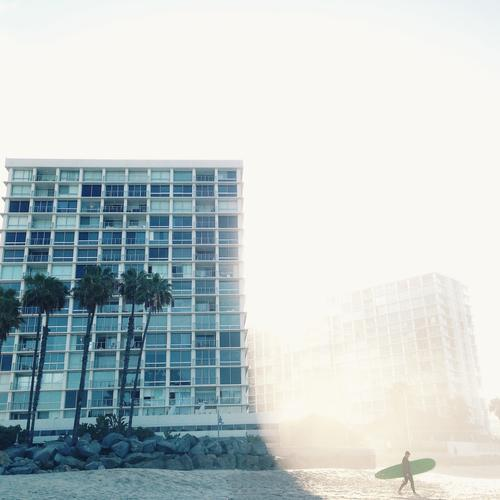

換日線 Crossing - 最貼近你的國際新視野
主打
頻道首頁
選單一
專欄作者
策展專欄
最新季刊
頻道
換日線原創
Crossing Originals
編輯嚴選
Editors' Picks
Crossing Campus
Crossing Campus
時事現場
News
人物故事
People
海外職場
Worklife
國際趨勢
Trends
文史藝術
Humanities
生活風格
Lifestyle
觀點評論
Perspective
關於我們
歷屆季刊
團隊成員
大事紀
搜尋
投書
歷屆季刊
團隊成員
大事紀
首頁
專欄作者
主打作者
萬島之國的我思，故我在／工程師作家的轉行人生大事23字
以滿分取得英國國際烈酒認證，目前是威士忌教育家與威士忌教育顧問機構「酒心智庫」共同創辦人。過去五年威士忌教育相關場次超過1500場、影響超過30000人次，橫跨北亞洲包含台灣、香港、中國、韓國。服務對象包含各大工商團體、世界各大酒商，產業橫跨不動產、金融業、珠寶業、鐘錶業、高端精品、廣告業、電子業等。
READ MORE
熱門作者
莊育霖／黑老闆的調忌人生
莊育霖，江湖人稱黑老闆，台灣單一麥芽威士忌品酒研究社理事長，本業雖是竹科工程師，但因喜歡調酒且熱愛威士忌，而開啟了不同於一般人的調忌人生。自 2009 開始，品飲過的威士忌已超過兩千種。喜歡與人分享書上找不到、酒商不想講的各種威士忌知識。出外旅行時，身上總帶著威士忌，期望能在各地交到朋友，並與之分享威士忌的美。
一畢業，就出國：通往世界職場的任意門
莊育霖，江湖人稱黑老闆，台灣單一麥芽威士忌品酒研究社理事長，本業雖是竹科工程師，但因喜歡調酒且熱愛威士忌，而開啟了不同於一般人的調忌人生。自 2009 開始，品飲過的威士忌已超過兩千種。喜歡與人分享書上找不到、酒商不想講的各種威士忌知識。出外旅行時，身上總帶著威士忌，期望能在各地交到朋友，並與之分享威士忌的美。
Humphrey Tsai／拙廬隨記
土生土長的台灣人，以不務正業為志。大學時從工學院轉至外語學院，學生時代曾從事翻譯、撰寫專欄、產品設計等副業。從未出國留學卻於2004年因外派遷居東京。工作從遊戲產業到娛樂產業又到科技產業，看過台商日商美商的酸甜苦辣與世態炎涼。
甘獻基／帶著問號來法國
共有99篇文章
七年級前段班，碩士期間開始接觸法國社會法文獻，越讀越多問號。碩士畢業五年後帶著妻小（還有一堆問號）赴笈巴黎繼續找答案。主要研究領域為社會法政策。邊讀邊學邊寫，但一直看不到盡頭。
李采薇 Weiwei／歐洲職涯顧問
共有99篇文章
台北文山區乖寶寶，現居荷蘭阿姆斯特丹，在政大國貿系大四時到鹿特丹管理學院交換，畢業後留下來攻讀供應鏈管理碩士，現為一名快樂的採購管理諮詢顧問／人生哲學是把生活變成自己喜歡的狀態，所以不用天天期待休假（努力中）

漢斯黃／莫比烏斯式的電影時空
共有99篇文章
漢斯黃，生於影史傳奇的1994年的後一年，標準台北天龍人，曾經渴望他鄉彼岸，卻又發覺自己離不開這座被雨困住的城市。曾經想尋根，藉此釐清自身與世界的關係，卻意外踏入電影的世界裡，從此成為「不是在看電影、就是在前往戲院路上」之人，也因此幸運找到自己的根源與彼岸。
彭紹宇 Peng Shao-Yu
共有99篇文章
1997年生於台中，政大外交系、國貿系雙學士。將赴倫敦大學國王學院攻讀研究所，努力成為有故事的青年。
Vanessa Wang／工程師作家的轉行人生
共有99篇文章
Vanessa Wang 出生於波多黎各，四年級搬到台灣。喜歡工程也喜歡寫作的她，在取得台大土木系碩士後到美國馬里蘭大學攻讀小說寫作碩士，後又自學寫程式，現為矽谷軟體工程師。愛追夢的她，最大的夢想是用文字陪伴世上所有和她一樣，努力、勇敢，卻又脆弱、孤獨的人們。
彭孟嫻 Jessica／海外法律人的生活觀點
共有99篇文章
彭孟嫻 Jessica Peng，目前從事法律調停工作（家事法&商業法），同時也是加拿大調停仲裁協會會員。高中時從台灣離鄉背井抵達加拿大就讀高中，大學畢業於加拿大皇后大學經濟學系（Queen’s University: Economics Degree），之後任職德商公司、加拿大皇家銀行。
甘獻基／帶著問號來法國
共有99篇文章
七年級前段班，碩士期間開始接觸法國社會法文獻，越讀越多問號。碩士畢業五年後帶著妻小（還有一堆問號）赴笈巴黎繼續找答案。主要研究領域為社會法政策。邊讀邊學邊寫，但一直看不到盡頭。
李采薇 Weiwei／歐洲職涯顧問
共有99篇文章
台北文山區乖寶寶，現居荷蘭阿姆斯特丹，在政大國貿系大四時到鹿特丹管理學院交換，畢業後留下來攻讀供應鏈管理碩士，現為一名快樂的採購管理諮詢顧問／人生哲學是把生活變成自己喜歡的狀態，所以不用天天期待休假（努力中）
漢斯黃／莫比烏斯式的電影時空
共有99篇文章
漢斯黃，生於影史傳奇的1994年的後一年，標準台北天龍人，曾經渴望他鄉彼岸，卻又發覺自己離不開這座被雨困住的城市。曾經想尋根，藉此釐清自身與世界的關係，卻意外踏入電影的世界裡，從此成為「不是在看電影、就是在前往戲院路上」之人，也因此幸運找到自己的根源與彼岸。
彭紹宇 Peng Shao-Yu
共有99篇文章
1997年生於台中，政大外交系、國貿系雙學士。將赴倫敦大學國王學院攻讀研究所，努力成為有故事的青年。
Vanessa Wang／工程師作家的轉行人生
共有99篇文章
Vanessa Wang 出生於波多黎各，四年級搬到台灣。喜歡工程也喜歡寫作的她，在取得台大土木系碩士後到美國馬里蘭大學攻讀小說寫作碩士，後又自學寫程式，現為矽谷軟體工程師。愛追夢的她，最大的夢想是用文字陪伴世上所有和她一樣，努力、勇敢，卻又脆弱、孤獨的人們。
彭孟嫻 Jessica／海外法律人的生活觀點
共有99篇文章
彭孟嫻 Jessica Peng，目前從事法律調停工作（家事法&商業法），同時也是加拿大調停仲裁協會會員。高中時從台灣離鄉背井抵達加拿大就讀高中，大學畢業於加拿大皇后大學經濟學系（Queen’s University: Economics Degree），之後任職德商公司、加拿大皇家銀行。
彭紹宇 Peng Shao-Yu
共有99篇文章
1997年生於台中，政大外交系、國貿系雙學士。將赴倫敦大學國王學院攻讀研究所，努力成為有故事的青年。
Vanessa Wang／工程師作家的轉行人生
共有99篇文章
Vanessa Wang 出生於波多黎各，四
年級搬到台
灣。喜歡工程也喜歡寫作的她，在取得台大土木系碩士後到美國馬里蘭大學攻讀小說寫作碩士，後又自學寫程式，現為矽谷軟體工程師。愛追夢的她，最大的夢想是用文字陪伴世上所有和她一樣，努力、勇敢，卻又脆弱、孤獨的人們。
彭孟嫻 Jessica／海外法律人的生活觀點
共有99篇文章
彭孟嫻 Jessica Peng，目前從事法律調停工作（家事法&商業法），同時也是加拿大調停仲裁協會會員。高中時從台灣離鄉背井抵達加拿大就讀高中，大學畢業於加拿大皇后大學經濟學系（Queen’s University: Economics Degree），之後任職德商公司、加拿大皇家銀行。